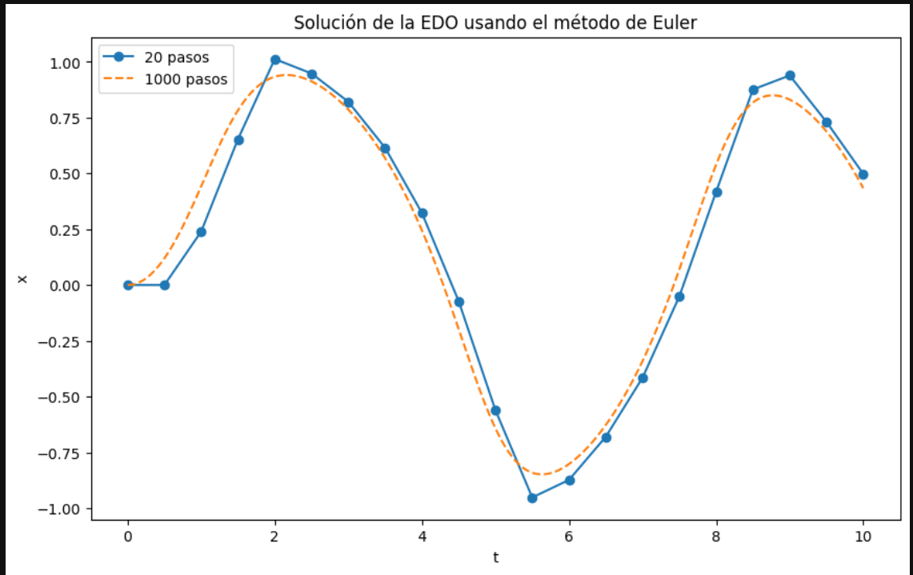

Explanation
Este código implementa el método de Euler para resolver una ecuación diferencial
ordinaria (EDO)
#Euler Gráficos
Importación de bibliotecas
import numpy as np
import matplotlib.pyplot as plt
Definición de la EDO a resolver
def f(x,t):
return -x**3+np.sin(t)
Parámetros iniciales, brindados por el enunciado
t0=0
x0=0
tf=10
En esta función se da la implementación del método de Euler. Primero se calcula
el número de pasos,siendo esta una función que depende de los tiempos inicial
y final, así mismo de la h (dato dado en el enunciado). Luego se inicializan
los arrays de t y x, con ceros, y se establecen las condiciones iniciales.
Siguiendo con el bucle for, que es el encargado de generarme las iteraciones
con las actualizaciones de t y x en cada paso, utilizando el método de Euler.
Finalmente, se devuelven los arrays con los valores finales de t y x.
def euler(f, t0, x0, tf, h):
n_steps=int((tf-t0)/h)
t=np.zeros(n_steps+1)
x=np.zeros(n_steps+1)
t[0]=t0
x[0]=x0
for n in range(n_steps):
t[n+1]=t[n]+h
x[n+1]=x[n]+h*f(x[n], t[n])
return t, x
Aquí simplemente se evaluaron dos distintos h, primero h= 20 y luego h=1000
#20 pasos
h_20=(tf-t0)/20
t_20, x_20 = euler(f, t0, x0, tf, h_20)
#1000 pasos
h_1000=(tf-t0)/1000
t_1000, x_1000 = euler(f, t0, x0, tf, h_1000)
Y por último se crea un gráfico para visualizar las soluciones de la EDO obtenidas
con 20 y 1000 pasos
plt.figure(figsize=(10, 6))
plt.plot(t_20, x_20, label='20 pasos', marker='o')
plt.plot(t_1000, x_1000, label='1000 pasos', linestyle='--')
plt.xlabel('t')
plt.ylabel('x')
plt.title('Solución de la EDO usando el método de Euler')
plt.legend()
plt.show()
Este código implementa el método de Runge-Kutta de segundo orden (RK2) para
resolver una ecuación diferencial ordinaria (EDO)
#Gráfica RK2
Importación de bibliotecas
import numpy as np
import matplotlib.pyplot as plt
Definición de la EDO a resolver
def f(x, t):
return -x**3 + np.sin(t)
Parámetros iniciales, brindados por el enunciado
t0 = 0
x0 = 0
tf = 10
Esta función rk2 implementa el método de Runge-Kutta de segundo orden (RK2).
Primero se calcula el número de pasos, luego se inicializan los arrays t y
x con ceros. Se establecen las condiciones iniciales.Se utiliza un bucle
for para actualizar los valores de t y x en cada paso, utilizando el método
RK2. En cada iteración se actualizan los valores de k1 y k2. Y con estos
valores obtenidos, se encuentran los valores de x y t actualizados. Finalmente,
se devuelven los arrays t y x con los valores calculados.
def rk2(f, t0, x0, tf, h):
n_steps = int((tf - t0) / h)
t = np.zeros(n_steps + 1)
x = np.zeros(n_steps + 1)
t[0] = t0
x[0] = x0
for n in range(n_steps):
k1 = h * f(x[n], t[n])
k2 = h * f(x[n] + 0.5 * k1, t[n] + 0.5 * h)
x[n + 1] = x[n] + k2
t[n + 1] = t[n] + h
return t, x
Se obtienen los resultados de resolver la EDO utilizando dos tamaños de paso
diferentes: 20 pasos y 1000 pasos.
#20 pasos
h_20=(tf-t0)/20
t_20, x_20 = rk2(f, t0, x0, tf, h_20)
#1000 pasos
h_1000=(tf-t0)/1000
t_1000, x_1000 = rk2(f, t0, x0, tf, h_1000)
Se crea un gráfico para visualizar las soluciones de la EDO obtenidas con 20
y 1000 pasos
plt.figure(figsize=(10, 6))
plt.plot(t_20, x_20, label='20 pasos', marker='o')
plt.plot(t_1000, x_1000, label='1000 pasos', linestyle='--')
plt.xlabel('t')
plt.ylabel('x')
plt.title('Solución de la EDO usando el método RK2')
plt.legend()
plt.show()
#Gráfica RK4
Este código implementa el método de Runge-Kutta de cuarto orden (RK4) para
resolver una ecuación diferencial ordinaria (EDO)
Importación de bibliotecas
import numpy as np
import matplotlib.pyplot as plt
Definición de la EDO a resolver
def f(x, t):
return -x**3 + np.sin(t)
Parámetros iniciales, brindados por el enunciado
t0 = 0
x0 = 0
tf = 10
Esta función rk4 implementa el método de Runge-Kutta de cuarto orden (RK4).
Se calcula el número de pasos. Se inicializan los arrays t y x con cero,
luego se establecen las condiciones iniciales. Se utiliza un bucle for
para actualizar los valores de t y x en cada paso utilizando el método RK4.
En cada iteración se encuentran los valores de k1, k2, k3 y k4, con sus
respectivas ecuaciones. Luego con estos valores actualizados se encuentra
los valores de x y t. La actualización de x si utiliza los k recién encontrados.
Finalmente, se devuelven los arrays t y x con los valores calculados.
def rk4(f, t0, x0, tf, h):
n_steps = int((tf - t0) / h)
t = np.zeros(n_steps + 1)
x = np.zeros(n_steps + 1)
t[0] = t0
x[0] = x0
for n in range(n_steps):
k1 = h * f(x[n], t[n])
k2 = h * f(x[n] + 0.5 * k1, t[n] + 0.5 * h)
k3 = h * f(x[n] + 0.5 * k2, t[n] + 0.5 * h)
k4 = h * f(x[n] + k3, t[n] + h)
x[n + 1] = x[n] + (k1 + 2*k2 + 2*k3 + k4) / 6
t[n + 1] = t[n] + h
return t, x
Se resuelve la EDO utilizando dos tamaños de paso diferentes: 20 pasos y
1000 pasos.
#20 pasos
h_20 = (tf - t0) / 20
t_20, x_20 = rk4(f, t0, x0, tf, h_20)
# 1000 pasos
h_1000 = (tf - t0) / 1000
t_1000, x_1000 = rk4(f, t0, x0, tf, h_1000)
Se crea un gráfico para visualizar las soluciones de la EDO obtenidas con 20
y 1000 pasos
plt.figure(figsize=(10, 6))
plt.plot(t_20, x_20, label='20 pasos', marker='o')
plt.plot(t_1000, x_1000, label='1000 pasos', linestyle='--')
plt.xlabel('t')
plt.ylabel('x')
plt.title('Solución de la EDO usando el método RK4')
plt.legend()
plt.show()
A continuación se muestran las gráficas de los métodos Euler, RK2 y RK4,
respectivamente. El objetivo de mostrar ambas curvas, es poder comparar
y ver que el rendimiento de 1000=h es mucho mejor que cuando se trabaja
un h=20

{kind=link}